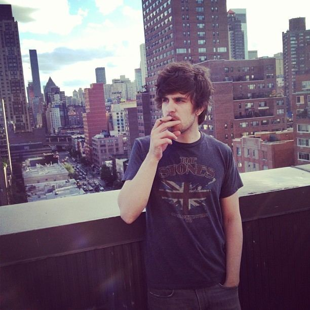
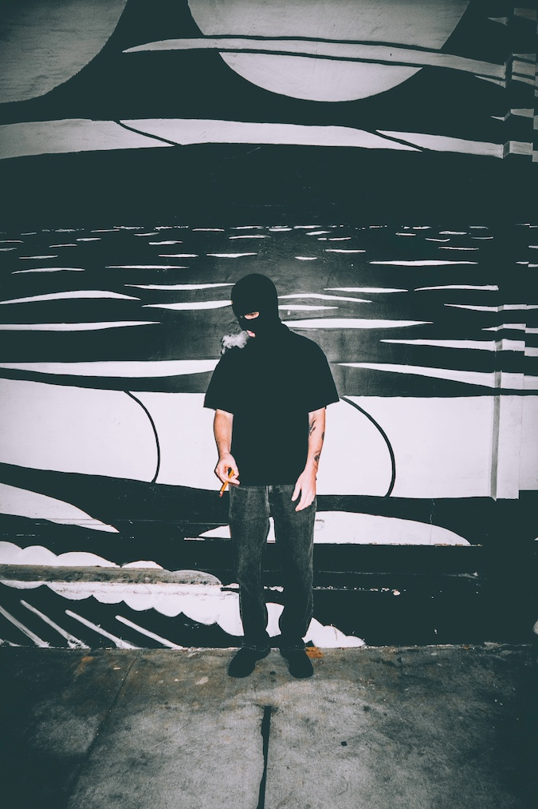

The Story
Born on November 25th, 1984 in Boston Massachusetts. Adam Jensen is an alternative rock artist, producer, and songwriter known for his raw lyrics, storytelling, and gritty vocals.
Jensen began his music journey at the age of 8 becoming a classically trained pianist. By his early 20s, he formed the Boston alternative rock band Mission Hill which would lead to signing with a major label and opening for massive acts like Bon Jovi, Pat Benatar, etc.
However, his 20s were also marked with personal struggles. After being kicked out of two universities for fighting and losing an athletic scholarship, Jensen found himself in local Boston street-life. Bar brawls, arrests, and a battle with substance abuse. His struggles took a toll, but ultimately it became the raw foundation for his music.
Most recently, Jensen disappeared for a year to write and record, and self-produce his debut album Hymns for the Damned. All from his garage.
The Music
Jensen's music draws heavily from the experiences that shaped his life. His songs often explore addiction, isolation, relationships, and mental struggles. His strong, gritty vocals and raw production give his music a very deep, confessional quality.
As a songwriter and producer, Jensen maintains a strong sense of independence in his career. Instead of hiding away his past or struggles, he uses them as a building block for his storytelling.
Discover his entire solo discography here: MUSIC
Hymns for the Damned
After the release of his single High (Unloveable) in 2025, Jensen stepped away from the public eye for a year. In 2026 Jensen came back with his debut solo album, Hymns for the Damned, written, recorded, and self-produced from his garage. This album represents a deeply personal period of his life, and a new chapter in his solo career.
This album brings together the themes that have followed Jensen throughout his career: self-destruction, love, loss, and the intense process of rebuilding.

Did You Know?
The opening of his song "Sigh" features the sound of his audience at his Denver show in 2025.

Cover Art